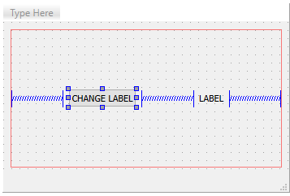
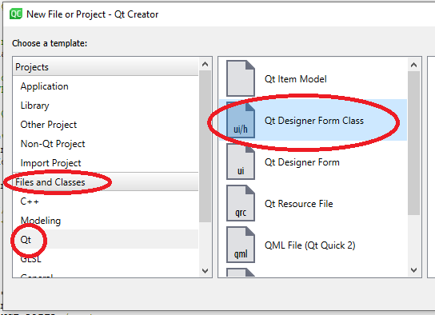
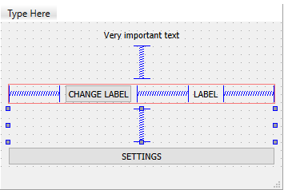
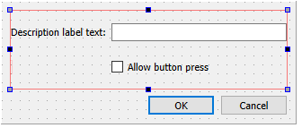
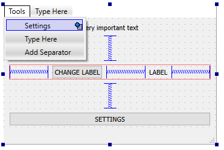
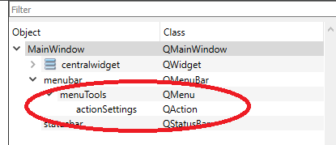
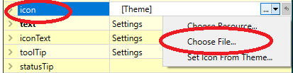
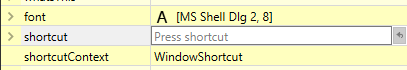
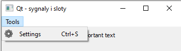

Lab 14 - Qt - sygnaly i sloty
Lab 14 - Qt - sygnały i sloty
Sygnały i sloty
Podstawy
Qt implementuje mechanizm sygnałów i slotów. Jest to narzędzie pozwalające na zarządzanie asynchronicznymi
(występującymi w losowych momentach bez blokującego wykonywanie kodu oczekiwania na nie) zdarzeniami pochodzącymi
zarówno z programu, jak i od użytkownika lub systemu operacyjnego. Wykorzystanie sygnałów (ang. signals) i slotów
(ang. slots) jest bardzo proste. Każdy klasa w Qt może implementować sygnały, czyli funkcje emitujące jakieś
zdarzenie. Równocześnie każda klasa może implementować sloty, czyli funkcje przechwytujące i przetwarzające
powyższe sygnały. Na przykład klasa QPushButton posiada sygnał clicked(), który jest
emitowany w momencie wciśnięcia przez użytkownika przycisku.
Chcąc obsłużyć zdarzenie od przycisku, w klasie głównego okna musimy przygotować odpowiedni slot. W tym celu w
deklaracji klasy umieszczamy dyrektywę slots: z modyfikatorem dostępu (w tym przypadku
private), a zaraz pod nią deklarację funkcji która będzie obsługiwać dane zdarzenie:
class MainWindow : public QMainWindow {
...
private slots:
void my_button_slot();
};Następnie w pliku .cpp definiujemy naszą funkcję obsługującą zdarzenie:
void MainWindow::my_button_slot()
{
}🛠🔥 Zadanie 🛠🔥
- Utwórz nowy projekt Qt Widgets Application
- Korzystając z Qt Designer umieść w oknie jeden element typu
QPushButtoniQLabel, dla zachowania kompatybilności z dalszymi przykłądami nie zmieniaj ichobjectName. Przykładowy wygląd okna:

- W plikach
mainwindow.cppimainwindow.hprzygotuj slot do obsługi przycisku zgodnie z instrukcjami opisanymi powyżej.
Uwaga: Na poprzednich zajęciach można było zauważyć, że Qt Creator potrafi sam generować wyżej opisany kod dla kontrolek umieszczonych na formie - zazwyczaj warto korzystać z tej funkcji, jednak dla demonstracji mechanizmu slotów celowo ją pomijamy.
Łączenie sygnałów do slotów
Sygnały i sloty należy ze sobą połączyć za pomocą dedykowanej funkcji connect(...). Łączy ona dwa
obiekty: wysyłający (sygnał) i odbierający (slot). connect musi być wywołana tylko raz. Wywołanie to
można umieścić np. w konstruktorze klasy. Aby połączyć zdarzenie wciśnięcia przycisku z naszym przygotowanym
slotem należy na przykład w konstruktorze klasy MainWindow wykonać:
MainWindow::MainWindow(QWidget *parent): QMainWindow(parent), ui(new Ui::MainWindow)
{
ui->setupUi(this);
connect(ui->pushButton, &QPushButton::clicked, this, &MainWindow::my_button_slot);
}Funkcja connect w tym przypadku przyjmuje następujące argumenty:
- wskaźnik na obiekt wysyłający sygnał,
- wskaźnik na prototyp funkcji, która stanowi sygnał,
- wskaźnik na obiekt odbierający sygnał,
- wskaźnik na prototyp funkcji, która stanowi slot.
Uwaga: jeśli na formie umieścimy przycisk nazywający się pushButton (domyślna
nazwa) oraz do klasy okna zawierającego przycisk dodamy slot o nazwie on_pushButton_clicked to Qt
niejawnie (bez wykorzystania w kodzie funkcji connect) podłączy sygnał clicked do tego
slotu. Aby uniknąć tego zachowania (jedynie dla demonstracji) w powyższych przykładach slot nazywa się
my_button_slot.
🛠🔥 Zadanie 🛠🔥
- W konstruktorze
MainWindowdodajconnectłączący sygnałclicked()przycisku z przygotowanym wcześniej slotem. - W slocie umieść kod, który w momencie wywołania zmieni zawartość tekstu elementu typu
QLabelna NEW TEXT AFTER CLICK.
Dodatkowe informacje
Jeden sygnał może wyzwalać wiele slotów i vice-versa - jeden slot może być wyzwalany przez wiele sygnałów, z różnych obiektów. Więcej na temat sygnałów i slotów można znaleźć w opisie na podstronie projektu Qt.
Modalne okna dialogowe i komunikacja z wykorzystaniem sygnałów
Modalne okna dialogowe to okna, które po wyświetleniu blokują dostęp do okna głównego do czasu aż nie zostaną
zamknięte. Mogą zostać wykorzystane do ustawiania parametrów konfiguracyjnych programu. Okna te, zazwyczaj
dziedziczą z klasy QDialog i zawierają przyciski OK i Anuluj.
Każde okno musi zostać utworzone jako oddzielna klasa. Najprościej wykorzystać do tego wbudowany w Qt Creator kreator. W tym celu File → New File or Project…. W liście Files and Classes wybierz kategorię Qt, następnie Qt Designer Form Class. Zatwierdź wybór przyciskiem Choose…:

W następnym oknie wybieramy Dialog with Buttons Bottom i klikamy Next. W następnym oknie możemy
nadać nazwę tworzonemu oknu dialogowemu. Wystaczy wyedytować pole Class name co spowoduje automatyczne
wypełnienie pozostałych pól. Zatwierdzamy klikając Next, a następnie Finish. Do drzewa projektu
zostaną automatycznie dodane pliki .ui, .cpp i .h.
🛠🔥 Zadanie 🛠🔥
-
Do głównego okna programu :
- dodaj
QPushButtonz napisem SETTINGS, zmieńobjectNamenasettingsButton, - dodaj
QLabeli wypełnij dowolnym napisem, zmieńobjectNamenadescriptionLabel.

- dodaj
-
Korzystając z kreatora dodaj do projektu klasę okna dialogowego o nazwie
SettingsDialog:- elementy w oknie dialogowym umieść w Form Layout,
- dodaj
QLineEdit, zmieńobjectNamenadescriptionTextEdit, - dodaj
QCheckBox, zmieńobjectNamenabuttonEnabledCheckBox.

-
Do klasy głównego okna dodaj prywatny
slot:void open_settings(), następnie za pomocą mechanizmuconnectpołącz wciśnięcie przyciskusettingsButtonz wywołaniemopen_settings().
Aby mieć możliwość utworzenia okna dialogowego konieczne jest załączenie nagłówka klasy go opisującego w pliku
mainwindow.cpp, zależnie od nadanej nazwy klasy okna dialogowego, na przykład:
#include "settingsdialog.h"Otwarcie okna modalnego, blokującego interfejs głównego okna, można wykonać w następujący sposób:
void MainWindow::open_settings()
{
SettingsDialog dialog; // utworzenie obiektu okna dialogowego
dialog.exec(); // uruchomienie/wyświetlenie okna; okno główne będzie czekać na zamknięcie okna
}🛠🔥 Zadanie 🛠🔥
- Dodaj do programu mechanizm otwierania okna dialogowego.
- Przetestuj działanie programu.
Kolejnym krokiem koniecznym do realizacji okna ustawień jest przekazanie do niego aktualnych wartości ustawień,
tak aby zostały one zaprezentowane użytkownikowi. Istnieje wiele możliwości realizacji takiej procedury.
Przykładowo klasa SettingsDialog może posiadać publiczną metodę służącą do przekazania wartości. Inną
opcją jest przekazanie tych wartości w konstruktorze klasy SettingsDialog.
🛠🔥 Zadanie 🛠🔥
- Wybierz metodę przekazania wartości z okna głównego do okna dialogowego (metoda publiczna klasy
SettingsDialoglub modyfikacja konstruktora domyślnegoSettingsDialog). - Aby odczytać aktualny stan aktywności przycisku skorzystaj z:
ui->pushButton->isEnabled() // typ bool- Aby odczytać aktualny napis z
QLabelskorzystaj z:
ui->descriptionLabel->text() // typ QString- W konstruktorze lub publicznej metodzie klasy
SettingsDialogskorzystaj z przekazanych informacji i zmień ustawienia obiektyQLineEditiQCheckBoxtak aby odzwierciedlały wartości z okna głównego, na przykład:
ui->buttonEnabledCheckBox->setChecked(button_enabled);
ui->descriptionTextEdit->setText(description_text);Jedną z opcji na przechwycenie zamykania okna jest skorzystanie z domyślnie umieszczonych na nich przycisków
OK i Cancel. Jeżeli tworząc okno dialogowe w kreatorze jako Dialog with Buttons Bottom,
to Qt Designer automatycznie dodał do okna obiekt typu QDialogButtonBox o objectName
równej buttonBox. Obiekty typu QDialogButtonBox emitują sygnał
QDialogButtonBox::accepted() po wciśnięciu przycisku OK.
🛠🔥 Zadanie 🛠🔥
- W klasie
SettingsDialogdodaj prywatny slotvoid buttonBoxClicked()który posłuży do przechwycenia wciśnięcia przycisku OK. - W konstruktorze
SettingsDialogwykonał połączenie sygnałuacceptedz nowoutworzonym slotem:
connect(ui->buttonBox, &QDialogButtonBox::accepted, this, &SettingsDialog::buttonBoxClicked);Na ten moment, po wciśnięciu OK okno dialogowe zostanie zamknięte, natomiast zmodyfikowanie wartości
elementów w oknie ustawień nie wpłynie na okno główne, ustawienia nie zostały jeszcze przekazane do
MainWindow. Jedną z opcji do przekazania zmiennych pomiędzy klasami (w tym przypadku z
SettingsDialog do MainWindow) jest także skorzystanie z sygnałów. Klasa
SettingsDialog powinna emitować sygnał zawierający parametry poszczególnych obiektów na formularzu,
które potem mogą zostać przechwycone. W Qt każdy obiekt dziedziczący po QObject może emitować sygnały
za pomocą słowa kluczowego emit. W tym celu w deklaracji klasy umieszczamy dyrektywę
signals:, a zaraz pod nią deklarację sygnału wraz z parametrami które mogą być za jego pomocą
przekazane, na przykład:
class SettingsDialog : public QDialog
{
/****/
signals:
void changesAccepted(bool button_enabled, QString description_text);
/****/
};🛠🔥 Zadanie 🛠🔥
- Do klasy
SettingsDialogdodaj sygnał:
void changesAccepted(bool button_enabled, QString description_text);- Wewnątrz metody
SettingsDialog::buttonBoxClicked()(wywołanej po kliknięciu przycisku OK) umieść emisję sygnałuchangesAcceptedz odpowiednimi parametrami:
void SettingsDialog::buttonBoxClicked()
{
emit changesAccepted(ui->buttonEnabledCheckBox->isChecked(), ui->descriptionTextEdit->text());
}Ostatnim krokiem jest przechwycenie sygnału w oknie głównym, w tym celu w klasie MainWindow
konieczne jest utworzenie prywatnego slotu, który zostanie połączony z sygnałem wyemitowanym przez
SettingsDialog, a następnie odpowiednio obsłużony. Konieczne jest, aby slot posiadał listę parametrów
odpowiadających łączonemu do niego sygnałowi. Ważna jest kolejność oraz typ parametrów, nazwy argumentów mogą być
dowolne.
🛠🔥 Zadanie 🛠🔥
- W klasie
MainWindowdodaj deklarację i implementację prywatnego slotu, z odpowiednimi parametrami. W implementacji wykonaj zmiany elementów interfejsu na podstawie otrzymanych w slocie argumentów:
//mainwindow.h
private slots:
void changeValues(bool button_enabled, QString description_text);//mainwindow.cpp
void MainWindow::changeValues(bool button_enabled, QString description_text)
{
ui->pushButton->setEnabled(button_enabled);
ui->descriptionLabel->setText(description_text);
}- W slocie
MainWindow::open_settings()po utworzeniu obiektu okna dialogowego, a przed jego wykonaniem, dodajconnectłączący sygnał zSettingsDialogdo nowoutworzonego slotu wMainWindow:
void MainWindow::open_settings()
{
SettingsDialog dialog(ui->pushButton->isEnabled(), ui->descriptionLabel->text());
connect(&dialog, &SettingsDialog::changesAccepted, this, &MainWindow::changeValues);
dialog.exec();
}- Przetestuj mechanizm zmian ustawień swojego programu.
QMenu i QAction
Do klas dziedziczących z QMainWindow (zazwyczaj opisujących główne okno programu) standardowo
przypisane jest menu użytkownika (QMenu), oraz pasek narzędzi. Strukturę menu oraz pasek narzędzi
można stworzyć z poziomu programu Qt Designer:

🛠🔥 Zadanie 🛠🔥
- Dodaj do programu menu Tools z wpisem Settings
Dodawanie poszczególnych wpisów w QMenu powoduje automatyczne tworzenie obiektów
QAction o automatycznie nadanych nazwach:

W łatwy sposób można przypisać ikonę do QAction. W tym celu zaznaczamy QAction do
edycji i modyfikujemy pole icon poprzez wybranie Choose File.... Należy pamiętać, że korzystając
z zewnętrznego pliku nie zostanie on dołączony do pliku binarnego .exe, dlatego plik musi się znaleźć
w folderze w którym wykonuje się nasz program. W przypadku Qt Creator jest to build folder dla
danego projektu. W razie wątpliwości poproś prowadzącego o pomoc.

Istnieje także możliwość w łatwy sposób zdefiniowania skrótu klawiszowego, którego wciśnięcie spowoduje tę samą akcję co kliknięcie danego wpisu w menu. W tym celu edytujemy pole shortcut.

Kliknięcie wpisu w menu (a także wciśnięcie skrótu klawiszowego) powoduje wyemitowanie sygnału
QAction::triggered, który można połączyć ze slotem korzystając z connect.
🛠🔥 Zadanie 🛠🔥
-
Dla obiektu
acctionSettings:- dodaj ikonę: settings.png (pamiętaj aby umieścić obrazem w folderze budowy programu),
- dodaj skrót klawiszowy Ctrl + S.

-
W konstruktorze
MainWindowwykonaj połączenie sygnałuQAction::triggeredzacctionSettingsdo slotuMainWindow::open_settings. -
Przetestuj różne metody otwierania okienka z ustawieniami.
{kind=link}
Zadanie końcowe 🛠🔥
Edytor tekstu
Wykorzystując Qt napisz prosty edytor tekstu.
Edytor powinien pozwalać na:
- utworzenie nowego dokumentu
- otwarcie pliku
- nadpisanie pliku
- zapisanie pliku jako nowy
Dodaj odpowiednie widgety do okienka i akcje do menu File.
Qt poza elementami interfejsu graficznego posiada także szereg obiektów/narzędzi które pozwalają na tworzenie multi-platformowych programów. Przykładowo, Wykorzystanie Qt uniezależnia od systemu operacyjnego obsługę okien otwierania/zapisywania plików, czy obsługę ścieżek systemu plików.
Do wskazania plików wykorzystaj klasę QFileDialog.
Wczytaj całą zawartość otwartego pliku do okienka tekstowego (do operacji na plikach służy klasa QFile).
Umożliw nadpisanie pliku (zapisanie pod tą samą ścieżką) lub zapisanie jako nowy plik.
Następnie dodaj do programu funkcjonalność Find and replace. Utwórz klasę okienka (File → New File or Project → Qt → Qt Designer Form Class → Widget), w którym będziesz mógł wprowadzić dwa ciągi znaków (źródłowy i docelowy) oraz dwa przyciski: Replace i Replace all.
Dodaj menu Edit, a w nim akcję Find and replace.
Połącz ich sygnały ze slotami w głównym okienku i zaimplementuj wymaganą funkcjonalność.
Możesz wspomagać się tutorialem Application Example.
Autorzy: Tomasz Mańkowski, Jakub Tomczyński, Dominik Pieczyński